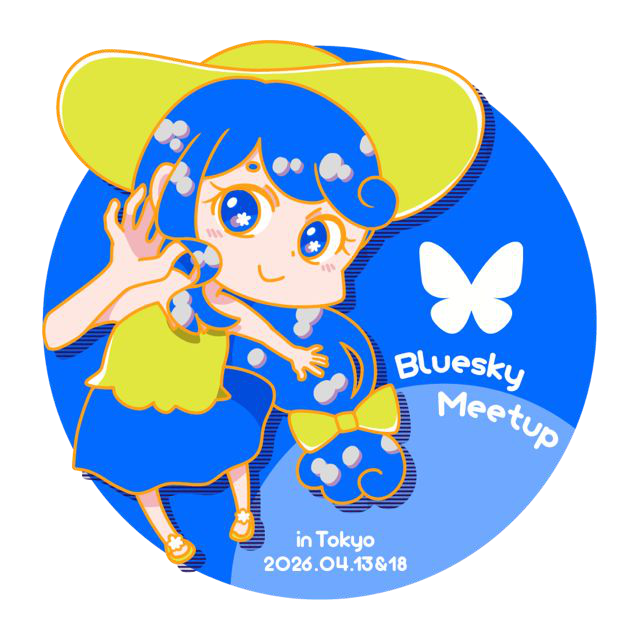
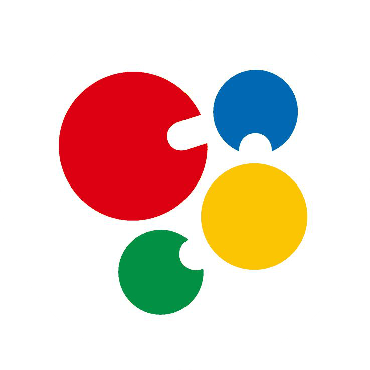
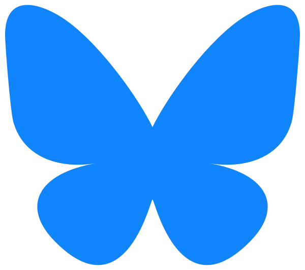
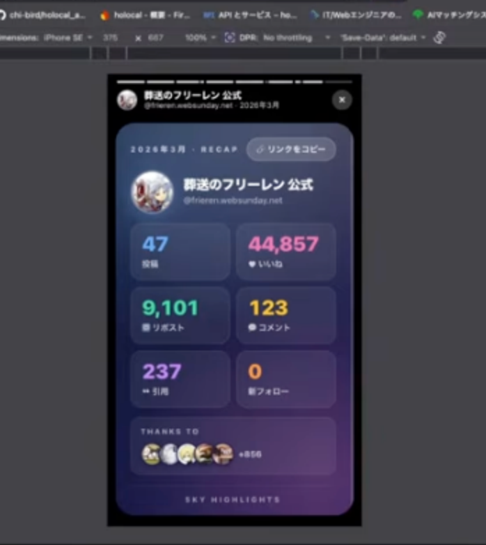
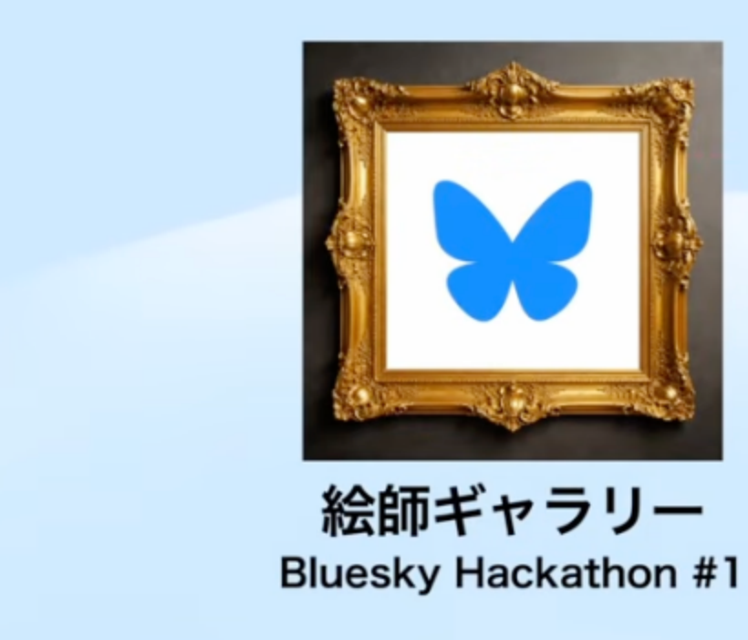
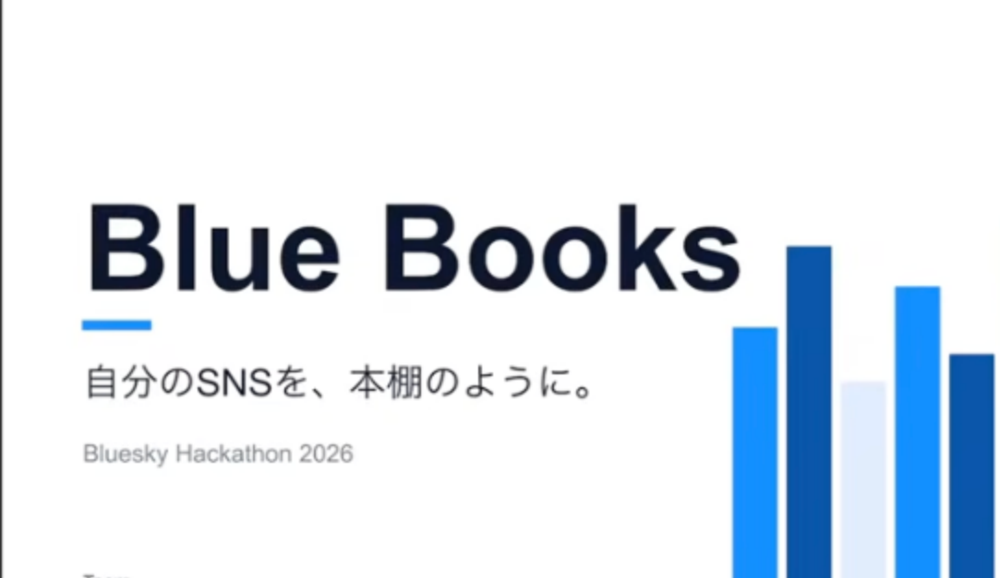
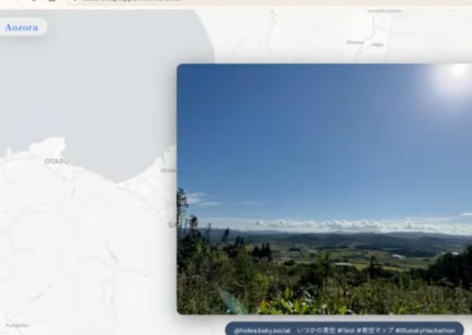
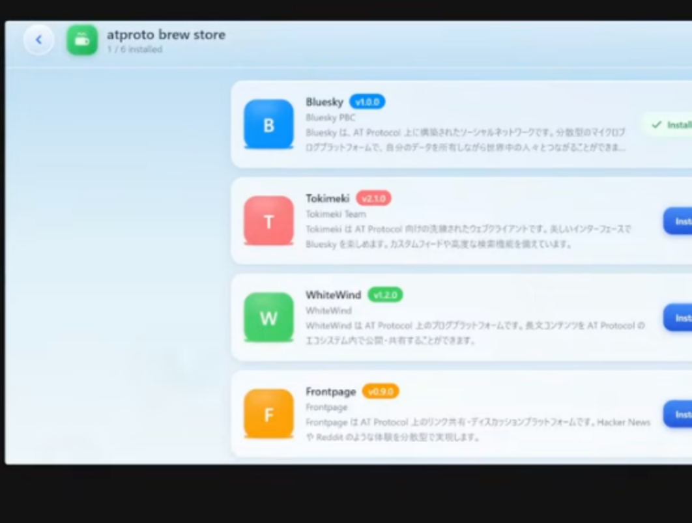
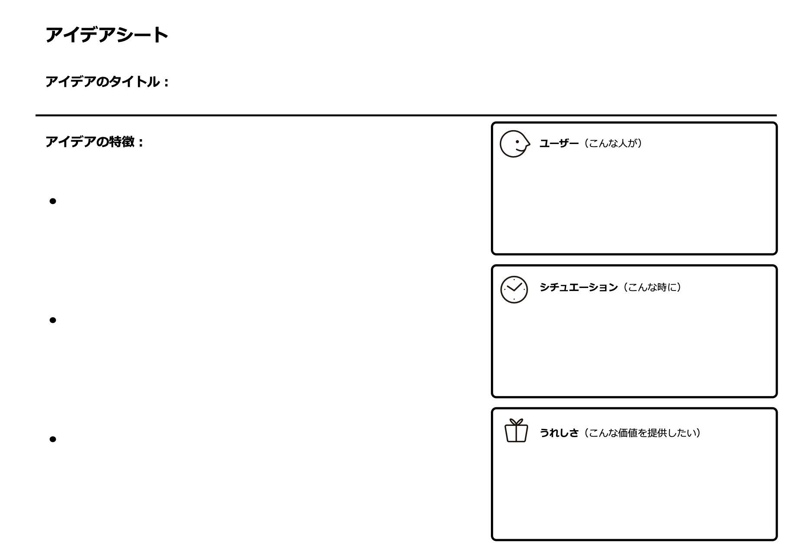

Bluesky Hackathon
Tokyo Vol.2
2026.11.14 SAT


const event = { protocol: "atproto", city: "Tokyo", vol: 2 };
// 00 OPENING
はじめに
// 00 OPENING
はじめに

このイベントはBluesky公式イベントです。
2023年に世界初のBluesky meetupを四谷ラボというコミュニティでボランティアでお手伝いしたことからの縁で運営の協力をおこなっています。
// 00 OPENING
四谷ラボってなんやねん
私が創設したコミュニティです。
会社組織に縛られずにオープンに知識を蓄積したり、
わいわいと楽しくやっていきながら
いずれ地球を飛び出そう！
というぶっ飛んだ目標があります。
詳しくはkojiraかShino3まで
// 01 GUIDE
本日の流れ
// 01 GUIDE
本日の流れ
- １２：００
- みんなで軽食を食べながらイベントの説明
- １３：００
- 過去のアイディアソン発表
- １３：１０
- プチアイディアソン
- １４：２０
- チーム分け
- １４：３０
- ハッカソン開始HACK START
- １７：２０
- 発表
- １８：１５
- 表彰
- １８：３０
- 交流会(お寿司！🍣)PARTY
- ２０：３０
- 終了
// 01 GUIDE
アイディアソン、ハッカソンとは
アイディアとマラソン、ハックとマラソンの造語です
丸1日や数日掛けてチームでアイディア出しや開発を進めます
昔はハッカソンは2日間とかで泊まり込みで夜を徹して開発したりすることが多かったです。(今はAIの開発速度があがって数時間でもできてしまう)
いろいろな流儀はありますが、アイディアソン、ハッカソンの醍醐味は、その場でチームを組んで新たな刺激を得ることが一番大事だと考えています
一人では絶対に得られない体験を大事にしましょう！
// 01 GUIDE
賞品について
上位2チームの入賞チームから順番にBlueskyグッズを選んでもらいます
※在庫がない分は後日匿名配送も可能です

// 01 GUIDE
開発について
何で開発しても構いませんが、
1チームに１つのClaude Codeの$50分のAPIキーを発行することができるので活用してください。
// 01 GUIDE
注意すること
発表と表彰はyoutube liveで配信する予定です。
もし、画面に映りたくない場合はあらかじめお知らせください。
説明や発表の時間にトイレなどで席を立たれると進行に影響があるため、なるべく影響のない時間にお願いします
途中退場も自由ですがハッカソン終了までは居て頂けると助かります！
(※18:30からの交流会はお寿司出ますけどね！🍣)
// 01 GUIDE
会場のWi-Fi
※connpassの参加者向け確認欄にも書かれています。
// 02 NETWORKING
どきどき交流タイム
// 02 NETWORKING
交流シール
交流したらお互いに相手の名札にシールを貼ってもらいましょう。
シールの数が多い人は後でいいことがあるかも？
それでは13時までご歓談ください
13時からプチアイディアソンがあるので今のうちにネタを収集するのもよいでしょう
// 05 DEMO & VOTE PRE-CHECK
投票ページを開いてみてください
最後の投票は events lab のページで行います。
いまのうちに一度開けるか確認してください
$open（差し替え）
※開けない場合は近くのスタッフに声をかけてください
// 03 IDEATHON · VOL.1 RECAP
前回のアイデア
Vol.1 では 5 チームがこんなものを作りました ・ 開発 約 2 時間 40 分
// VOL.1 RECAP 01 / 05
スカイハイライト
3位タイ 88ptチーム:ブルーハイライト ── Blueskyの1ヶ月を最高の1枚に
困りごと / 着想
音楽サービスの年間ハイライトが Bluesky にも欲しい。既存の振り返りサービスは海外製で、日本向けでなく見づらい
主な機能
- 期間を指定して振り返りを作成
- いいね・リポスト・引用数や活動時間帯を分析
- リンクコピーでワンタップ共有
技術・工夫
- ATProto で投稿・反応データを取得
- ログインしてより幅広いデータを取得

★ ここが刺さった反応数 → 最多いいね投稿 → まとめページまでを流れで見せたデモ。実用性が評価された
source: blog.428lab.net（開催レポート） / YouTube 発表動画 00:18:34〜
// VOL.1 RECAP 02 / 05
絵師ギャラリー
3位タイ 88ptチーム:絵師ギャラリー ── 絵師のファンを Bluesky に呼ぶギャラリー
困りごと / 着想
Bluesky 日本のフォロワー上位には絵師が多いのに、ファンがいないと X に戻ってしまう。ハッシュタグ検索では画像を一覧で見られない
主な機能
- タグクラウドからハッシュタグ別に画像一覧
- ユーザーごとの画像一覧
- 見ている画面からフォロー・リプライ
技術・工夫
- 画像付きの投稿に絞った検索・一覧 UI
- コメントは通常のリプライとして投稿

★ ここが刺さった画像を見る → 作者の一覧 → そのままフォロー、までデモで完結。実用性と Bluesky らしさが評価された
source: blog.428lab.net（開催レポート） / YouTube 発表動画 00:27:38〜
// VOL.1 RECAP 03 / 05
ブルーブックス
5位 85ptチーム:青空書店BlueBooks ── 自分のSNSを本棚のように
困りごと / 着想
ヘビーユーザーは本 1 冊分も投稿しているのに、ホームは時系列に流れるだけで振り返りにくい
主な機能
- 投稿を選んで 1 冊の「本」にまとめる
- テーマ別（遠征記録・料理・写真など）の本棚
- 共有用ページのリンクで人に見せる
技術・工夫
- ログインして自分の投稿を一覧から選ぶ
- フロー型の SNS にストックの軸を足す

★ ここが刺さった新規作成 → 投稿にチェック → 名前を付けるだけで本になる手軽さ。実用性は 5 チームで最高評価
source: blog.428lab.net（開催レポート） / YouTube 発表動画 00:36:22〜
// VOL.1 RECAP 04 / 05
青空マップ
優勝 95ptチーム:今日の青空 ── その青空、どこの空？を地図で見る
困りごと / 着想
Bluesky には青空の写真がたくさん流れてくる。ただのタイムラインではなく、どこの青空なのかを知りたい
主な機能
- ドラッグ＆ドロップで画像を投稿
- 写真の EXIF の GPS から地図にピン
- 投稿をスライドショーで再生
技術・工夫
- React + Vite + Leaflet / Workers + D1
- 画像処理はブラウザで完結、個人情報を残さない

★ ここが刺さった会場で投稿して北海道にピンが立つデモ。Bluesky らしさと独創性でトップ、ダントツの 1 位
source: blog.428lab.net（開催レポート） / YouTube 発表動画 00:45:07〜
// VOL.1 RECAP 05 / 05
@プロトブリュー
2位 89ptチーム:@プロトボーイズ ── ATProto アプリのホーム画面
困りごと / 着想
ATProto で作られたサービスが増えてきた。自由に選んで並べられる入口が欲しい（着想は Wii のホーム画面）
主な機能
- 「ブリューストア」でサービスを一覧
- 選んだサービスをホームに追加
- ホームからサービスを起動
技術・工夫
- 実在の ATProto サービスをストアに並べる
- 今回はモックデータ。次は PDS のレコードと同期したい

★ ここが刺さったストアからインストールしてホームから起動するデモ。独創性が評価された
source: blog.428lab.net（開催レポート） / YouTube 発表動画 00:53:49〜
// 03 IDEATHON
プチアイディアソン
// 03 IDEATHON
プチアイディアソンの流れ
- 13:20
- アイディアをアイデアシートに書く
- 13:40
- アイディアを発表(1つ1分程度で発表)
- 14:00
- アイディアに投票
- 14:10
- 集計
- 14:15
- 上位5アイディア発表
- 14:20
- チーム分け(良いと思ったアイディアのチームに参加)
// 03 IDEATHON
プチアイディアソン
各自に配ったアイデアシートに最低1枚書いてもらいます。書ける人は何枚でも

右上のこのへんに自分の名前を書いておいてください
1分で説明することをイメージしながら書くとよいでしょう。
絵を描いても構いません
// 03 IDEATHON
プチアイディアソン開始！
タイトル、ユーザー、シチュエーション、うれしさを全て埋めてみましょう
右上のこのへんに自分の名前を書いておいてください
1分で説明することをイメージしながら書くとよいでしょう。
絵を描いても構いません
// 03 IDEATHON
アイディア発表
// 03 IDEATHON
アイディア発表
手前の席の人から順にその場で立って、
１アイディア１分でアイディアの説明をしてください
// 03 IDEATHON
アイディアに投票
机にシートを並べてください
並べ終わったら各自シールを良いと思ったアイディアに貼っていきます
自分自身のアイディアシートに貼っても構いません
// 03 IDEATHON
アイディア集計中
// 03 IDEATHON
アイディア発表
// 03 IDEATHON
アイディア発表
上位５つのアイディアの発案者の方は前の方に来てください
// 03 IDEATHON
チーム分け
// 04 HACKATHON
ハッカソン開始
// 04 HACKATHON
ハッカソンの進め方
- 自己紹介
- 役割分担
- 最初にリーダーを決める
- 各自得意なことで役割を振る
- プレゼン資料つくる人
- リサーチする人
- イラストや図の作成、素材集め(プレゼン資料、開発で使うもの)
- 利用者視点でレビューする人
- 開発する人
- プレゼンする人(複数人可)
- など
- 開発工程例
- リーダーが指示を出して進める
- 1. アウトラインを決める
- 2. 必要なタスクの洗い出し
- 3. 必要なら役割の振り直し
- 4. プロトタイプの作成(1回目はモックで全体が動くもの)
- 5. できたものをみんなでレビュー
- 6. 課題の洗い出し
- 7. 納得いくまで続けて3に戻る
- プレゼン資料も並行で進める
- 余裕があればプレゼンのリハも
※1チームに１つのClaude Codeの$50分のAPIキーを発行することができるので活用してください。
※何もしないで暇な人が出ないように注意するため、リーダーはディレクションに集中してなるべく実作業を持たないこと
※開発が難しそうだったり、もっといいアイディアが他に思いついたらチーム合意のもとピボットしてもよい
// 04 HACKATHON
審査基準
Blueskyらしさ
AT Protocolで分散型エコシステムへのよいアプローチになっているか
独創性
ユニークか、尖っているか
推す！
自分に刺さるか
実用性
役に立つかどうか
// 05 DEMO & VOTE
ハッカソンプレゼン
// 05 DEMO & VOTE
投票
// 05 DEMO & VOTE
投票
events lab のページから投票してください
$open（差し替え）
※自チームへの投票は集計対象から除外されます
// 05 DEMO & VOTE FALLBACK
投票（予備）
events lab のページが開けない場合は、こちらのフォームから投票してください
$open（差し替え）
※自チームへの投票は集計対象から除外されます
// 05 DEMO & VOTE
集計中
// 06 AWARDS
結果発表！
// 06 AWARDS
特別賞✨
// 06 AWARDS
✨特別賞
- チーム名
- 受賞のひとこと
// 06 AWARDS
優秀賞⚡
// 06 AWARDS
⚡優秀賞
- チーム名
- 受賞のひとこと
// 06 AWARDS
🏆最優秀賞
// 06 AWARDS
🏆最優秀賞
- チーム名
- 受賞のひとこと
// 06 AWARDS
こちらにアンケートの記入をお願いします！
// 07 PARTY
交流会
// 07 PARTY
交流シール
交流したらお互いに相手の名札にシールを貼ってもらいましょう。
シールの数が多い人から順にグッズを配布します。(上位3名。入賞チームは除く)
// 07 PARTY
おつかれさまでした！
❯Process finished with exit code 0